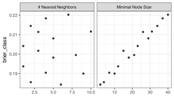

4 Missing Data
This chapter outlines how to work with missing data when building prediction models.
A general discussion on missing data in R can be found in R for Data Science (2e). The Missing Book is an excellent reference that supplements this chapter.
The data will be taken from A morphometric modeling approach to distinguishing among bobcat, coyote, and gray fox scats. The data set is designed to see how well experts can determine which of three species (bobcats, coyotes, and gray foxes) can be identified by their poop feces (a.k.a. scat). There are physical measurements as well as some laboratory tests that can be used as predictors. The species is the outcome. The data are in the modeldata package.
4.1 Requirements
You’ll need 3 packages (naniar, ranger, and tidymodels) for this chapter. You can install them via:
Let’s load the meta package and manage some between-package function conflicts.
library(tidymodels)
tidymodels_prefer()
theme_set(theme_bw())The data are automatically attached when the tidymodels package is loaded. The data frame is named scat. Let’s split the data into training and testing, create some resamples (to be discussed in chapter TODO), and a data frame of predictor values. For both data splitting steps, we’ll stratify by the species since the frequencies of each are not balanced.
set.seed(383)
scat_split <- initial_split(scat, strata = Species)
scat_tr <- training(scat_split)
scat_te <- testing(scat_split)
scat_rs <- vfold_cv(scat_tr, repeats = 5, strata = Species)
scat_tr_preds <- scat_tr %>% select(-Species)Here is the breakdown of the species per data partition:
scat_tr %>% count(Species)
#> # A tibble: 3 × 2
#> Species n
#> <fct> <int>
#> 1 bobcat 42
#> 2 coyote 21
#> 3 gray_fox 18
scat_te %>% count(Species)
#> # A tibble: 3 × 2
#> Species n
#> <fct> <int>
#> 1 bobcat 15
#> 2 coyote 7
#> 3 gray_fox 7We’ll spend some time on visualization and summary techniques that are helpful when performing exploratory data analysis.
4.2 Investigating Missing Data
The naniar package is an excellent tool for missing data. Let’s load it and then get a summary of our training set variables.
library(naniar)
miss_var_summary(scat_tr_preds) %>% print(n = Inf)
#> # A tibble: 18 × 3
#> variable n_miss pct_miss
#> <chr> <int> <num>
#> 1 Taper 14 17.28
#> 2 TI 14 17.28
#> 3 Diameter 4 4.938
#> 4 d13C 2 2.469
#> 5 d15N 2 2.469
#> 6 CN 2 2.469
#> 7 Mass 1 1.235
#> 8 Month 0 0
#> 9 Year 0 0
#> 10 Site 0 0
#> 11 Location 0 0
#> 12 Age 0 0
#> 13 Number 0 0
#> 14 Length 0 0
#> 15 ropey 0 0
#> 16 segmented 0 0
#> 17 flat 0 0
#> 18 scrape 0 0The miss_var_summary() function summarizes the missing data in the predictors. The n_miss column is the number of missing values, and the p_miss column is the proportion of missing values.
For convenience, let’s make character vectors of column names for predictors with and without missing values.
We can make an upset plot, which visualizes frequently occurring subsets in the high-dimensional Venn diagram where each predictor is encoded as missing/not missing:
library(naniar)
gg_miss_upset(scat_tr_preds, nsets = 10)From this, we might notice that there might be two different mechanisms causing missing data. First, the laboratory values for predictors (d13C, d15N, and CN) are only missing with one another. This suggests that some laboratory errors may be the cause of their missingness. The second set of predictors that are missing at once are all related to physical properties measured on-site. If the diameter and taper predictors cannot be ascertained, it might be because the scat sample might not have been… solid enough to measure. These assertions, if accurate, help us understand the type of missingness involved and, by extension, how to handle them.
The steps we would take to address missingness in the predictors is a preprocessing step; the tidymodels approach is to handle these in a recipes object. Recipes are more thoroughly introduced in Section 5.4. For now, we’ll show their usage and defer the broader information on how recipes work (and why you might want to use them) to the next chapter.
4.3 Filtering
A recipe consists of an initialized object and a sequence of one or more “steps” that define specific actions/computations that should be done to the data prior to modeling.
The initialization consists of a call to recipe::recipe(). The most common interface used there is a formula. This declares which column is the outcome and which are predictors. For example:
scat_rec <- recipe(Species ~ ., data = scat_tr)At this point, the recipe catalogs each column’s name, data type, and role (i.e., predictor or outcome). From there, we can add step functions to specify what should be done to what columns.
Two recipes steps can be used for filtering missing data: recipes::step_naomit() and recipes::step_filter_missing(). The former removes rows of the training set, and the latter removes predictors if they have too many missing values.
4.3.1 Row Filtering
Let’s add step_naomit() to the recipe and declare the dplyr selector dplyr::everything() should be used to capture which columns should be checked for missing rows:
na_omit_rec <-
scat_rec %>%
step_naomit(everything())To estimate the recipe (manually), we can use recipes::prep() to process the training set and use these values to decide which rows to omit:
The recipes::bake() function can be used to apply the recipe to a data set. Before processing, there are 81 scat samples in the training set. How many remain after applying the recipe?
To do this, we can use the bake() function but supply new_data = NULL. This is a shortcut: when preparing the recipe, we must execute all the steps on the entire training set. By default, recipes save the preprocessed version of the training set in the recipe object. There’s no need to re-process the data.
The results is that we loose 16 scat samples due to missingness:
all_complete <- bake(na_omit_rec, new_data = NULL)
nrow(all_complete)
#> [1] 65However, step_naomit() is a bit irregular compared to other recipe steps. It is designed to skip execution on every other data set. This is an important (and appropriate) choice for this method.
If we were to apply the recipe to the test set, it would not exclude the missing rows:
bake(na_omit_rec, new_data = scat_te) %>% nrow()
#> [1] 29
nrow(scat_te)
#> [1] 29
# but there are missing values:
sum(!complete.cases(scat_te))
#> [1] 34.3.2 Column Filtering
The sample size of this data set is not large; removing rows might be more problematic than removing columns with a lot of missingness. We can use the step_filter_missing() step to do this. We decide on a threshold representing our “line of dignity” regarding how much missingness is acceptable. That can be specified as a proportion of missing data and is passed to the threshold argument.
Here’s an example where we determine that more than 10% missingness is too much. Based on our results from the naniar package above, this should eliminate two predictors (Taper and TI).
filter_features_rec <-
scat_rec %>%
step_filter_missing(everything(), threshold = 0.10) %>%
prep()
ncol(scat_tr)
#> [1] 19
bake(filter_features_rec, new_data = NULL) %>% ncol()
#> [1] 17
# use the tody method to determine which were removed:
tidy(filter_features_rec, number = 1)
#> # A tibble: 2 × 2
#> terms id
#> <chr> <chr>
#> 1 Taper filter_missing_jh0Cw
#> 2 TI filter_missing_jh0Cw4.4 Imputation
The recipes package has several steps for imputing predictors: recipes::step_impute_bag(), recipes::step_impute_knn(), recipes::step_impute_linear(), recipes::step_impute_lower(), recipes::step_impute_mean(), recipes::step_impute_median(), recipes::step_impute_mode(), recipes::step_impute_roll().
4.4.1 Linear Regression
Let’s consider using linear regression to predict the rows missing their value of Taper. The imputation steps allow you to select which column to impute and which predictors to use as predictors in the imputation model.
If we were to predictor Taper as a function of Age, Length, Number, and Location, the code would be:
lin_impute_rec <-
scat_rec %>%
step_impute_linear(Taper, impute_with = imp_vars(Age, Length, Number, Location)) %>%
prep() # <- This estimates the regression
# Imputing the test set:
lin_impute_rec %>%
bake(new_data = scat_te, Taper) %>%
filter(is.na(Taper))
#> # A tibble: 0 × 1
#> # ℹ 1 variable: Taper <dbl>The tidy() methods can extract the model object. We’ll use tidyr::enframe() to get the coefficients:
lm_res <- tidy(lin_impute_rec, number = 1)
lm_res
#> # A tibble: 1 × 3
#> terms model id
#> <chr> <list> <chr>
#> 1 Taper <lm> impute_linear_dtBVd
enframe(coef(lm_res$model[[1]]))
#> # A tibble: 6 × 2
#> name value
#> <chr> <dbl>
#> 1 (Intercept) 38.34
#> 2 Age -1.603
#> 3 Length 0.2712
#> 4 Number -2.480
#> 5 Locationmiddle -5.366
#> 6 Locationoff_edge 5.216We might also want to impute the predictor based on its mean value but would like it to be different based on some other grouping column. We can accomplish this by using a single categorical predictor in the formula (such as Location):
group_impute_rec <-
scat_rec %>%
step_mutate(Taper_missing = is.na(Taper)) %>%
step_impute_linear(Taper, impute_with = imp_vars(Location)) %>%
prep()
group_impute_rec %>%
bake(new_data = scat_tr, Taper, Taper_missing, Location) %>%
filter(Taper_missing) %>%
count(Taper, Location)
#> # A tibble: 3 × 3
#> Taper Location n
#> <dbl> <fct> <int>
#> 1 24.18 middle 10
#> 2 29.87 edge 2
#> 3 30.52 off_edge 24.4.2 Nearest-Neighbor Imputation
The syntax for imputation steps is very consistent, so the only change that would be made to move from linear imputation to a nonlinear, nearest-neighbor method would be to change the name.
The number of neighbors defaults to five. We can change that using the neighbors option:
knn_impute_rec <-
scat_rec %>%
step_impute_knn(
all_of(miss_cols),
impute_with = imp_vars(Age, Length, Number, Location),
neighbors = 5) %>%
prep()
imputed_train <-
knn_impute_rec %>%
bake(new_data = scat_tr)
mean(complete.cases(imputed_train))
#> [1] 1Note that this step uses Gower distance to define the neighbors. This method does not require the predictors to be numeric or in the same units; they can be left as-is. Also, the function keeps the imputed data in the same format. A categorical predictor being imputed will remain a categorical predictor.
4.4.3 Tuning the Preprocessors
The syntax to tune parameters will be described in depth in Chapter 9. Let’s briefly show that preprocessing parameters can also be tuned.
Many tree-based models can naturally handle missingness. Random forest models compute a large number of tree-based models and combine them into an ensemble model. Unfortunately, most implementations of random forests require complete data.
Let’s use our neighbor-based imputation method but tune the number of neighbors. At the same time, we can tune the random forest \(n_{min}\) parameter using a space-filling grid.
To do this, we give the neighbors argument of step_impute_knn() a value of tune(). This marks it for optimization. tidymodels knows a lot about these parameters and can make informed decisions about the range and scale of the tuning parameters. With the tune::tune_grid() function, using grid = 15 will automatically create a two-factor grid of candidate models to evaluate.
knn_impute_rec <-
scat_rec %>%
step_impute_knn(
all_of(miss_cols),
impute_with = imp_vars(Age, Length, Number, Location),
neighbors = tune())
rf_spec <-
rand_forest(min_n = tune(), trees = 1000) %>%
set_mode("classification")
knn_rf_wflow <- workflow(knn_impute_rec, rf_spec)
knn_rf_res <-
knn_rf_wflow %>%
tune_grid(
scat_rs,
grid = 15
)Looking at the results below, we can see that the number of neighbors does not seem to affect performance (measured via a Brier score). However, for these data, the random forests \(n_{min}\) parameter does have a profound effect on model performance.
show_best(knn_rf_res, metric = "brier_class")
#> # A tibble: 5 × 8
#> min_n neighbors .metric .estimator mean n std_err .config
#> <int> <int> <chr> <chr> <dbl> <int> <dbl> <chr>
#> 1 2 6 brier_class multiclass 0.1843 50 0.008136 Preprocessor01_Model1
#> 2 4 2 brier_class multiclass 0.1855 50 0.007938 Preprocessor02_Model1
#> 3 10 9 brier_class multiclass 0.1900 50 0.007496 Preprocessor04_Model1
#> 4 7 4 brier_class multiclass 0.1904 50 0.007951 Preprocessor03_Model1
#> 5 12 1 brier_class multiclass 0.1937 50 0.007449 Preprocessor05_Model1
autoplot(knn_rf_res, metric = "brier_class")